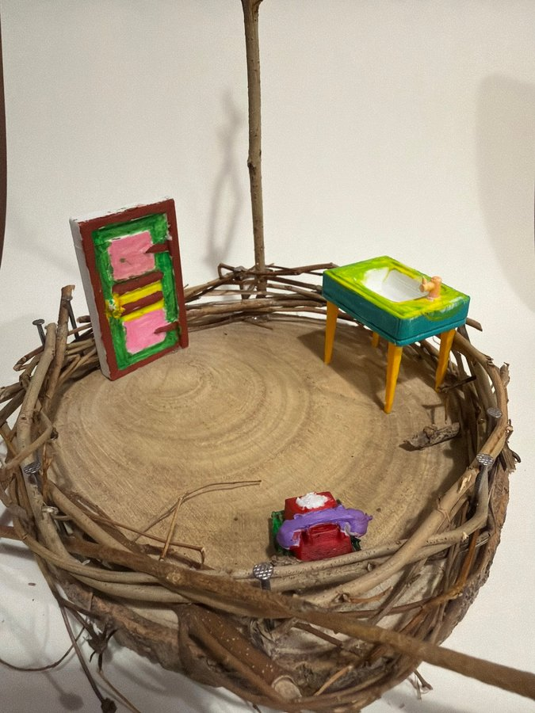

本網站為藝術科技項目之詮釋性預測（築巢 Weaving Home 藝術詮釋），並非心理／臨床診斷。


修正頂視圖顯示物件分散喺大幅空白木面：彩繪門板喺左邊，綠藍色洗手盆喺右邊，紫紅色電話喺前方，直立樹枝支柱靠後中央。枝條圍圈較低，中央冇大型家具，空間感比其他作品開闊。
相片支持門板、盆狀家具、前方細小紫紅物件同直立枝條嘅位置；不過前方物件有枝圈遮擋，「電話」主要按頂視圖標籤辨認，細節未能由相片完全核實。
巢嘅頂視圖
修正頂視圖顯示物件分散喺大幅空白木面：彩繪門板喺左邊，綠藍色洗手盆喺右邊，紫紅色電話喺前方，直立樹枝支柱靠後中央。枝條圍圈較低，中央冇大型家具，空間感比其他作品開闊。
相片支持門板、盆狀家具、前方細小紫紅物件同直立枝條嘅位置；不過前方物件有枝圈遮擋，「電話」主要按頂視圖標籤辨認，細節未能由相片完全核實。
屋企嘅人
（藝術詮釋）呢個巢冇床、椅或衣櫃，唔似完整住宅，更似用幾件關鍵物件代表一個人嘅日常：由門口入嚟、去洗手盆清潔，再透過電話同外界聯絡。畫面留白好多，亦可能將「屋企人」表達成暫時未出現、只留下使用痕跡嘅人。
由於冇人物同成套家具，無法推斷住戶數目、年齡或關係；任何獨居、小家庭之類講法都會超出可見證據。
性格
（藝術詮釋）彩繪門板用粉紅、綠、黃同啡色分格，洗手盆亦用鮮綠、藍綠同黃腳撞色，令簡單物件變得玩味而醒目。相對之下，大片木紋地面同原色枝條保持樸素，形成彩色人工物同天然材料嘅對照。
作品氣質可以形容為簡潔、敢用色同重視單件物品，但唔應由此推斷創作者本人外向、整潔或有任何固定人格。
動機
（藝術詮釋）作品似乎刻意唔填滿個巢，而係揀入口、清潔、聯絡同支撐四個意象。呢種刪減令「家」唔靠大量家具成立，而係靠幾個每日會做嘅動作同一條仍然連住自然嘅直立枝。
空位亦令觀眾可以想像物件之間嘅路徑。呢個係構圖帶出嘅閱讀，唔代表作品記錄咗缺乏家具、搬遷或任何真實生活困難。
需求
（藝術詮釋）門板提出出入同界線；洗手盆提出清潔、用水或照顧身體；電話標籤提出溝通同求助；直立枝條就像一個視覺支點。四件物件之間保留距離，顯示可活動嘅空間本身亦可能係作品重視嘅部分。
外圍枝圈仍然提供一條鬆散界線，既圈住生活功能，又冇完全封閉。以上係象徵性需要，唔係真實住戶評估。
經歷
（藝術詮釋）相片見到枝條由釘同幼枝固定，木面保留年輪，彩色模型則有明顯手繪筆觸。作品嘅「經歷」首先係由拾取、固定、上色同擺位組成，將幾件孤立物件安放到同一塊木片。
呢種由少量元素重新組屋嘅過程可以令人聯想到暫住或重新開始，但影像本身冇提供真實人生史，唔應將聯想講成事實。
證據摘要
| 物件 | 推論 |
|---|---|
| 左側彩繪門板 | 以框格同多色塗層呈現入口意象，但未連接牆身。 |
| 右側綠藍色盆狀家具 | 頂視圖稱洗手盆；相片見到白色盆位、水龍頭狀小件同四隻腳。 |
| 前方紫紅色細小物件 | 頂視圖稱電話；相片被枝條遮住，功能辨認信心較低。 |
| 後方中央直立樹枝 | 由底座向上延伸，成為空曠場景最明顯嘅垂直支點。 |
| 大片裸露木紋地面 | 物件之間保留廣闊空位，構圖唔以填滿空間為目標。 |
| 低矮枝圈、釘同木片底座 | 顯示巢由天然材料逐段固定而成，邊界疏落可穿透。 |
信心同限制
對門板、洗手盆、直立枝同空間位置有高信心；對紫紅物件係電話主要依靠頂視圖，信心較低。相片唔足以判斷住戶組成、性格或真實經歷。所有需要同動機只屬藝術性、非診斷詮釋。